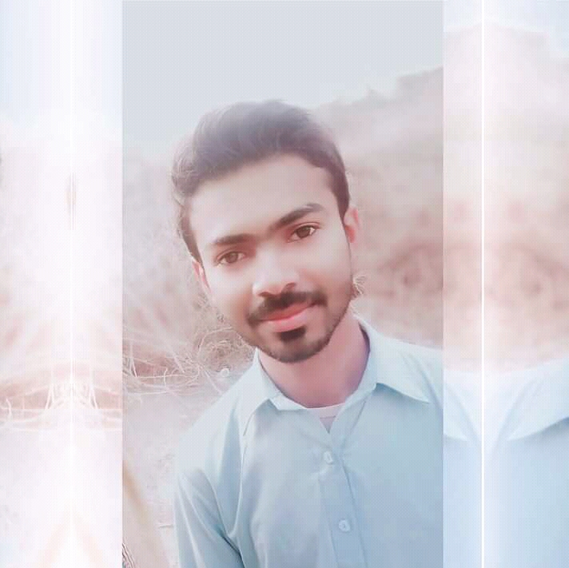

|  | Muhammad Faryad Az Zim
|
| Degree | Year | Board |
|---|---|---|
| Computer Science | 2019-23 | GC University Faisalabad |
| Mathmatics | 2020-24 | VU Pakistan |
| Web Designong/Devlpment | ✅✅✅✅✅ | IOS Devolpment | ✅ |
| Web Apllication Devolpment | ✅✅✅✅ | Android Apllication Devolpment | ✅✅✅ |
PHP Framework (certificate): Zend, Codeigniter, Symfony.
Programming Languages: JavaScript, HTML5, PHP OOP, CSS, SQL, MySQL.